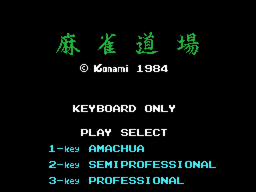
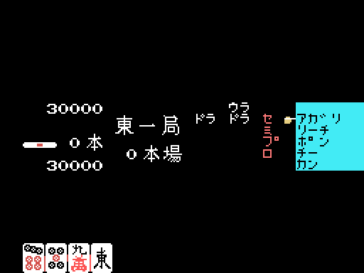
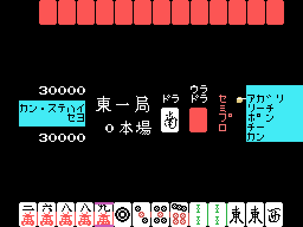
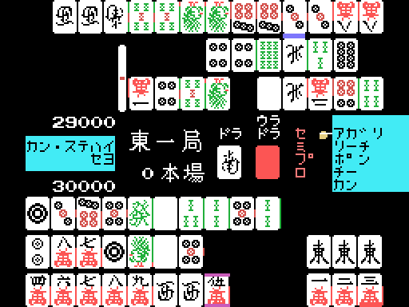
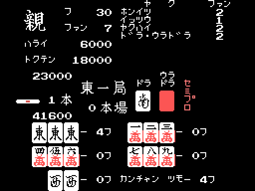
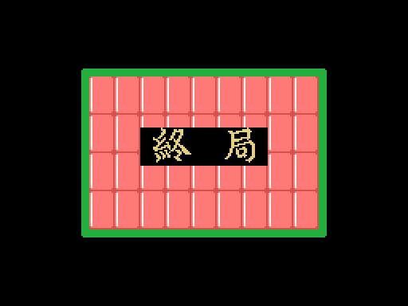

Konami's Mahjong es un mahjong japonés de dos jugadores: la persona contra el cartucho, mano a mano, sin los otros dos asientos de la mesa. Se juega solo con el teclado —el propio título lo avisa— y una partida son cuatro turnos de reparto: este con el 1 repartiendo, este con el 2, sur con el 1 y sur con el 2. Cada uno se repite mientras gane el que reparte, así que las manos pueden ser más de cuatro, pero los turnos no.

El título son cuatro kanji, 麻雀道場, Mahjong Dōjō. Debajo, el copyright escrito con la fuente del propio juego, y luego el menú en ASCII: KEYBOARD ONLY, PLAY SELECT y las tres dificultades en romaji, 1-key AMACHUA, 2-key SEMIPROFESSIONAL y 3-key PROFESSIONAL.
Esa tecla no elige solo un rótulo. La tabla de 0x4AE0 la convierte en el byte 0xE002 —0x40, 0x60 o 0x50—, y de sus bits 5 y 4 sale 0xE040, que es la dificultad de verdad. Hay una cuarta entrada, la de la tecla 4, que vale cero: no hace nada. Lo que cambia cada dificultad está en La máquina.
Todo el cartucho es una máquina de estados con dos bytes de memoria: 0xE000 dice en qué estado va y 0xE001 en qué paso dentro de él. La tabla de 0x40ED tiene quince palabras y de ahí no se sale.
| estado | qué pasa |
|---|---|
| 0-4 | el arranque, el rótulo que baja y el texto de presentación |
| 5 | el título, con el menú de las tres dificultades |
| 6-7 | arranca el demo |
| 8 | la pantalla de dificultad, y solo se llega pulsando una tecla |
| 9 | negro: se borra la pantalla y se pinta la mesa de la mano |
| 10 | la mesa lista, y empieza el reparto |
| 11 | la mano entera, con nueve pasos |
| 12 | el cierre de la ronda |
| 13-14 | 終局, el final de la partida |
Del 14 se vuelve al 0 y empieza otra vez. El estado 11 es donde está el juego, y sus nueve pasos son el reparto, la mano, el desmontaje de la mesa y el recuento:
| paso | qué hace |
|---|---|
| 0-1 | el reparto, ficha a ficha |
| 2 | la mano se juega: robos, descartes, llamadas |
| 3-6 | se destapan las manos y se monta el recuento |
| 7 | el recuento: fu, han, jugadas y pago |
| 8 | y al estado 12 |
El paso 2 se lleva casi todo el tiempo: 103,7 de los 130,3 segundos que dura la mano del demo.
Cuando el cartucho arranca y nadie toca nada, se reparte una mano, se juega entera, se puntúa y se vuelve a empezar. No hay un modo demo aparte: recorre la misma máquina de estados que una partida, con las mismas rutinas.
La diferencia está en de dónde salen las pulsaciones. Al entrar en el estado 7, 0x416B engancha el bloque de 0x4AE8 —ciento cuatro bytes— como fuente de teclado, y 0x4A68 los va sirviendo en lugar de la matriz mientras el bit 6 de 0xE002 esté a cero, que es lo que distingue el demo de una partida. Los valores son las mismas máscaras que arma el lector real: bit 0 arriba, bit 1 abajo, bit 2 izquierda, bit 3 derecha, bit 4 espacio, bit 5 select. El formato es de longitud variable y lo decide el nibble bajo de cada entrada: a cero, la pulsación ocupa un byte y dura 64 fotogramas; si no, ocupa dos y el segundo dice cuántas veces seguidas se repite. Los ocho ceros del final son el guion agotado.
Por eso el demo sale igual cada vez: dos arranques en frío independientes dan la misma traza, instante a instante. Lo que no es constante es cuánto dura cada vuelta. El estado 0 se repite a los 5,95, 169,48, 338,44 y 509,00 segundos del encendido, o sea vueltas de 163,53, 168,96 y 170,56 segundos: la semilla del azar sale del registro R del refresco de memoria (0x41C6), y con ella cambia la mano que se construye la máquina y lo que tarda en acabarse. Determinista no es lo mismo que periódico.

Arriba y abajo, los dos marcadores: 30.000 puntos cada uno al empezar, en BCD y en centenas de punto. En el centro, el viento y el número de mano (東一局) y el contador de repeticiones (本場). A su derecha, las dos fichas indicadoras, la del dora y la del ura-dora; el ura solo cuenta si hay riichi, pero las dos se pintan igual. A la izquierda, el contador de palos de riichi que haya en la mesa.
El panel cian de la derecha es el menú de llamadas, y su orden lo fija 0x660A: アガリ, リーチ, ポン, チー, カン. Cada opción deja un bit en 0xE1C7 —1, 2, 4, 8 y 0x10, de arriba abajo— y 0x663C despacha los cuatro últimos.

La mano del rival va arriba y boca abajo, la propia abajo y a cara vista. El reparto se anima en tandas, y cada una corre a su ritmo —cada 32, cada 16 o cada 4 fotogramas—, porque lo que se está viendo es la animación: las trece fichas ya están repartidas antes de que se dibuje la primera.
El turno se divide en ocho fases, cada una un bit de 0xE1AA. La que importa es la 1, elegir el descarte, y ahí las dificultades se separan: con la primera no hay reloj y hay que pulsar para robar, mientras que con la segunda y la tercera corre un cronómetro que a los 420 fotogramas avisa con un sonido y a los 600 descarta solo, la ficha que tenga el cursor encima.

La primera dificultad tiene además una ayuda que las otras dos no: 0x49C6 no deja descartar una ficha de espera propia estando en riichi, y avisa cuando el descarte del rival da ron.

Cuando alguien canta, la mano se para y el paso 7 monta la cuenta en pantalla, en el orden en que se hace: primero las figuras con sus fu, una cada 64 fotogramas; luego la espera y los fu de base; la suma; el total redondeado a la decena de arriba; y al final los nombres de las jugadas, uno por llamada, con el pago detrás.
Arriba a la izquierda se ve quién gana —親 si es el que reparte—, フ y ファン son los fu y los han, ハライ lo que paga el perdedor y トクテン lo que cobra el ganador. A la derecha, la lista de jugadas con su valor en han. Abajo, la mano separada en figuras, con los fu de cada una y la clase de espera.
Que ハライ y トクテン no coincidan no es un error de lectura: con tsumo son dos cifras distintas a propósito, y eso está contado en Las reglas.
Los puntos tampoco saltan de una cifra a otra: se mueven de cien en cien, uno por fotograma, con su sonido.

La partida se acaba cuando el que no reparte gana el último turno, y entonces el cierre monta un muro de fichas y escribe encima 終局, shūkyoku, fin de la partida. Unos nueve segundos después se vuelve al título.